Introduction #
So I’m working in UI again.
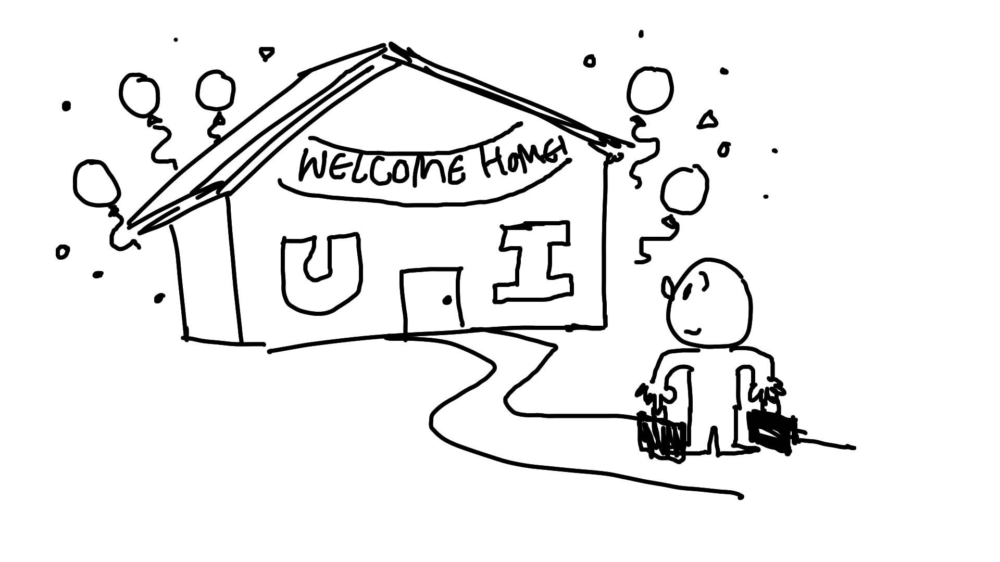
I cut my game dev teeth in UI. I entered into the Empire of Sin project as an intern doing some tool work before moving on to a couple UI screens. Eventually I became the UI Systems owner, having to deal with multiple platform requirements, constant iteration and rework, and just about struggling to keep up while learning on the go.
I set up the UI framework on our next project, but transitioned away into gameplay code, working on boss battles, dismemberment, cinematics,.. all the fun stuff. But in 2025 our project lost funding and I said goodbye to the people I’d been working with for the better part of a decade.
And now I’m back to UI.
Having that break and coming back has allowed me to re-examine what worked, what didn’t work, what took up all my time, and what I wish I would have done differently.
Pillars of UI Development #
At its core, UI programming is getting gameplay on screen. UX designers direct the organization and flow. UI artists make it pretty. And UI Testers make sure its solid. As you’re the one with the power to glue it all together, doing your best job also is supporting them in doing their best work.
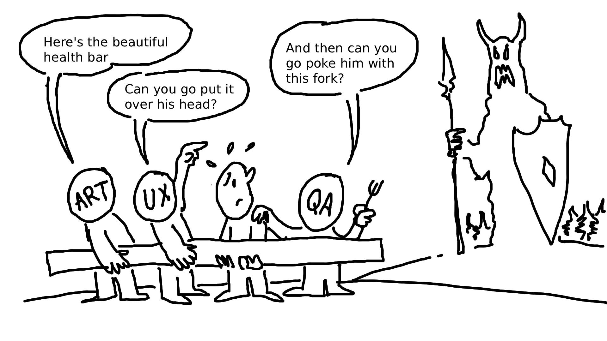
To support that, we need processes in place that make UI…
- Easy to Create - Get the UX vision working
- Easy to Iterate - Adapt to changes in UX vision, and let Art make it pretty
- Easy to Test - Help Testers make sure its bulletproof
- Easy to Debug - Respond to Testers finding holes
- Easy to Maintain - Be able to adjust at scale
- Easy to Monitor Performance - Make sure its both pretty AND fast
These should always be what you’re coming back to and asking, “Which of these need improvement?”. Refining and improving each of these processes will lead to smoother development and happy team members.
Lets focus on the first one on that list.
Focus: Easy to Create #
So what is our general creation process?
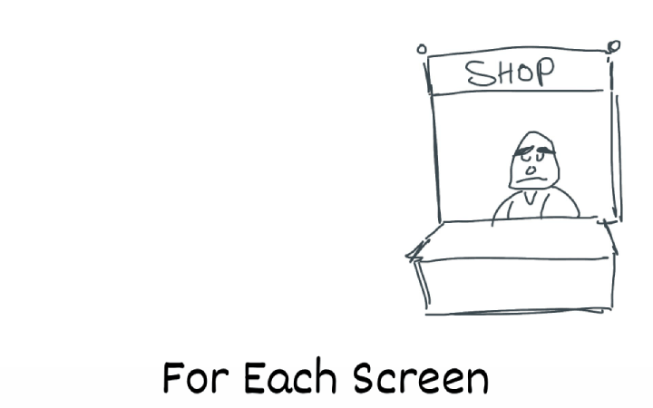
As a programmer, the task list becomes quite similar between screens or widgets, usually involving some or all of the following:
- Set up the layout using appropriate widgets/components (building new reusable widgets/components where necessary)
- Collect game data
- Display game data
- Making sure art can come along later and adjust how its displayed
- Listen for changes to game data
- Update the screen based on those changes
- Set up player inputs (button callbacks, input callbacks) for appropriate states
- Set up navigation for appropriate states (making sure the right buttons are selected and can navigate between each other)
- Applying the results of player inputs and the resulting state changes
For each of these you will
- Write code/adjust layout
- Test its working
- Repeat.
Now that we’ve identified the process, what are some of the pain points to this process?
Creation Pain Point 1: Missing Functionality #
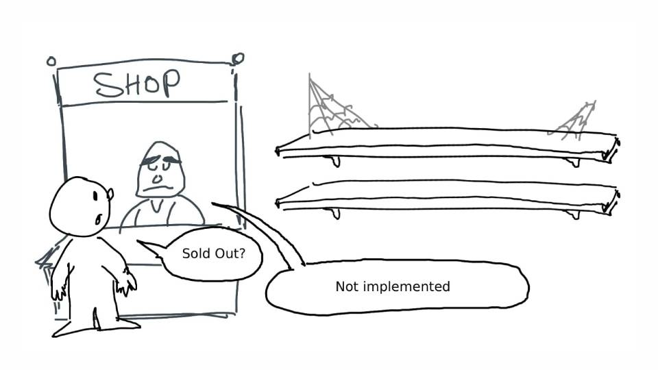
On being given a wireframe/design document and starting work on new UI, you’ll likely need to check for existing/missing gameplay functionality. A game in development is a work in process and you need to be able to get your work done despite what is implemented.
Looking back at the list we can see a couple points directly require game data:
- Collect game data
- Display game data
- Listen for changes to game data
- Update the screen based on those (game data) changes
- Applying the results of player inputs (changing game data) and the resulting state changes
That’s about half our task list! We can still set up our layout, input, and navigation, but without data to put on the screen even those will be crippled. For example, if we were setting up an inventory screen, how could we test navigating between items if we have no game items to navigate between?
So we clearly want to reduce our reliance on gameplay, as that will be our first pain point. What are some things we can do to keep working when there is no gameplay to work with?
Solution: Mock Data #
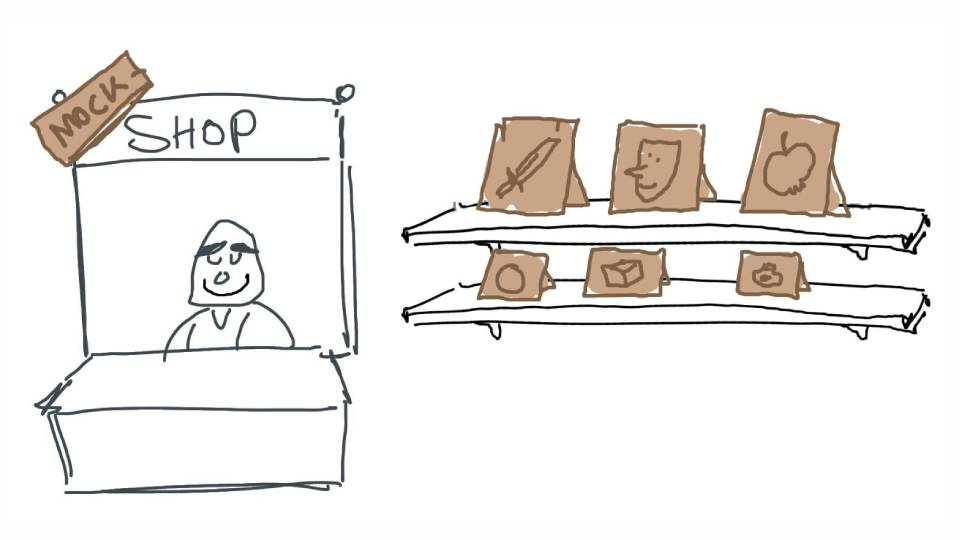
The first solution that comes to mind is mock data. If we don’t have the inventory items yet, we can just fake some of our own. While we don’t know exactly what data or functionality they will have in the game, we do know what data we’re going to need from them. Going back to our inventory item example, the wireframe shows we need to display:
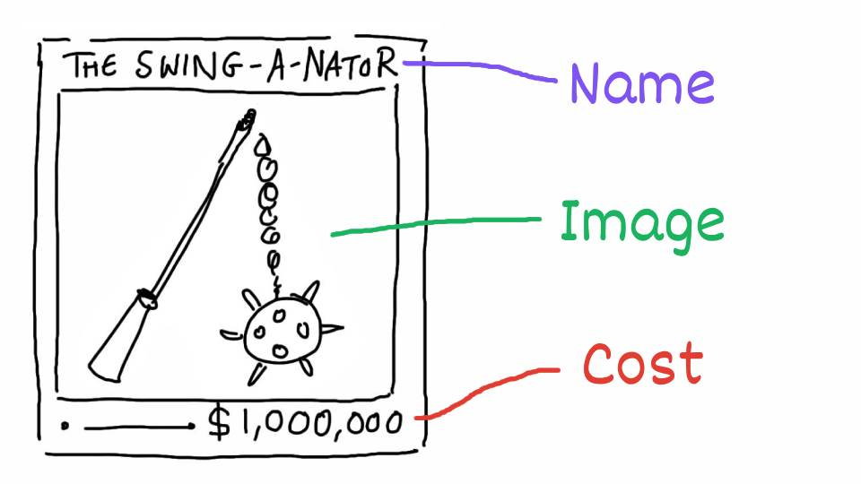
- Item Name
- Image
- Cost
So lets make our own items that just contain those 3 attributes. Fill a list of the mock items and pass them to the screen. Lets see if we can handle some of those tasks now.
- Collect game data? (No, will still need to do that later)
- Display game data? (Yes! We can display our mock data)
- Listen for changes to game data? (Not yet, maybe this is something we can also fake?)
- Update the screen based on those changes (If we can fake the above, then yes!)
- Applying the results of player inputs and the resulting state changes (Not yet, but also maybe something we can fake.)
Right away we can see this opens up possibilities to reduce or even completely remove our reliance on gameplay being implemented before getting started on our UI work!
Now before we get too excited there are two things to keep in mind:
- If we use mock data, it’ll have to be swapped to game data at some point. Is there a way we can avoid completely redoing our work when the gameplay comes in?
- The point of this is to speed us up. If making and managing tons of mock data is slowing us down then we’re missing the point. (i.e. Gameplay is already done, its locked in, is making mock data worth it if we have the game data?)
Before addressing these, lets continue our exploration of pain points.
Creation Pain Point 2: The time it takes to test #
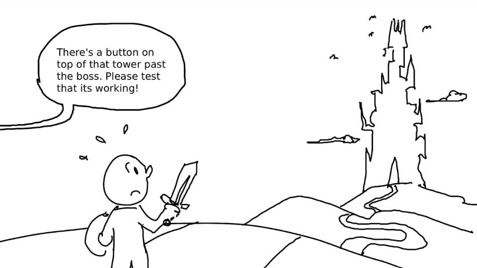
Going back to the creation cycle, we need to…
- Write code/adjust layout
- Test its working
- Repeat. We’ve looked at the write code part, what about the “Test its working” part.
Most game engines provide you with a comprehensive editors for making UI. They’ll often give you a design preview, giving you a near representation of what you’ll see in the game. That will help for a lot of the layout setup and adjustments, but you’ll eventually get to a point where you’ll need to test it in the game, and this is where you’ll start to notice a massive slowdown to your creation cycle. (The bigger the project, the worse it gets.)
It just takes so long to test it in-game.
You need to test a boss healthbar? Worst case scenario you need to boot up the level with the boss, and hopefully there’s some debug command or save data to get you over to him as quick as possible. At the best of times that cycle can take 20-30 seconds, which adds up quickly if you’re needing to iteratively tweak and test.
Solution 1: Use a Museum #
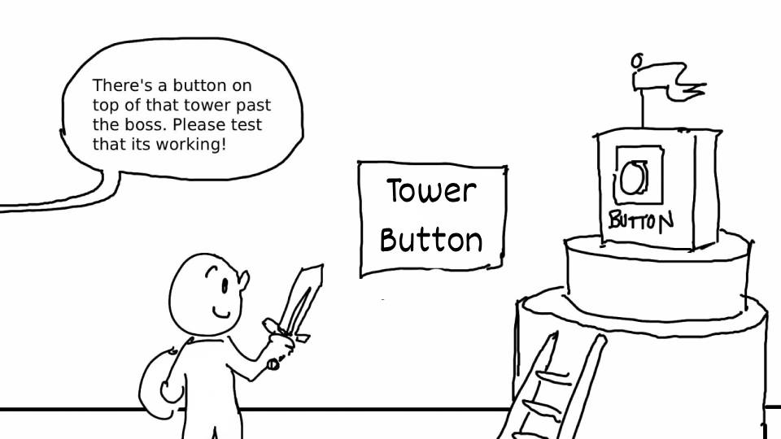
If you’re not familiar with this term I recommend checking out the following article on Gyms, Zoos and Museums
Most well set up projects will have gyms set up, which will make this process much faster as you won’t be tied to the bloat of a full game running, but even that won’t always cover every use case. What about testing a victory screen? A K.O. event in a fighting game? There is often UI that is, by its nature, tough to access.
So we could set up a UI specific gym or museum. This would be really handy for UI that is tied to in-world items, like health-bars over enemy heads. We could also set up triggers for opening various hard to access screens, NPCs that trigger conversations to test dialogue UI..etc.
But can we do better?
Solution 2: Console Commands #
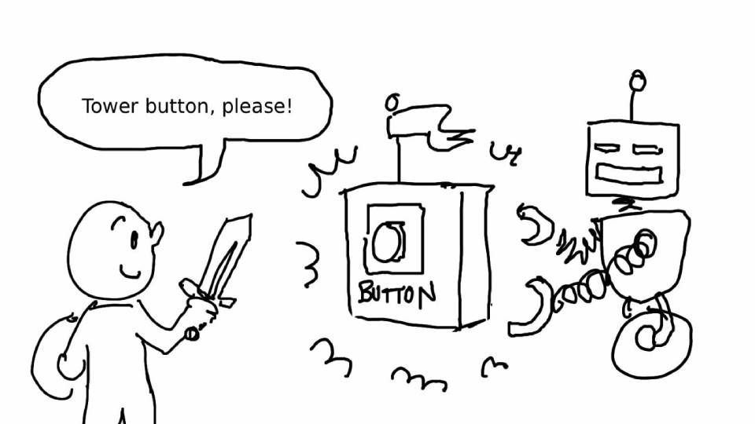
As most UI outside of NPC and objective markers is layered on top of the viewport and isn’t tied to in-world geometry, you can save yourself a lot of time by setting up tools or console commands to open any UI from anywhere.
“But what about the context?” you ask. “How am I going to test a victory screen if I don’t know what the scores are?”. Well let me point you back to our good friend, Mr. Mock Data.
While of course you will eventually need to test against real game data. Much of the create/test cycle time will be done on testing user input, navigation, buttons highlighting correctly, state changes in the screen, and much more that can easily be tested for runtime functionality before ever being connected to real game data.
Circling Back #
So when first bringing up Mock Data I said we’d cover these two:
- Can we avoid completely redoing our work when the game data comes in?
- Is making mock data worth it if we have the game data already?
So starting with the second one there, it can be.
- As we just covered, if your game state is tough to get into, use Mock Data.
- If your visuals need to test a variety of states, use Mock Data.
- If you want to set your visuals up for automated performance profiling, Mock Data can stand in for multiple states to test.
Along with these reasons, if you set up your UI to be easy for developers to open from anywhere, and have fast ways to populate the UI with multiple states, it also means QA will be able to spend a lot more time hammering on it.
Quicker to test = More Testing = More Bulletproof!
So then back to the first question, can we avoid completely redoing our work when the game data comes in? Lets have a look.
ViewModel Interception #
This is an approach to use if your UI framework is using a Model-View-ViewModel pattern (MVVM). As a quick explanation, the MVVM pattern works by splitting the UI responsibilities into 3 structures:
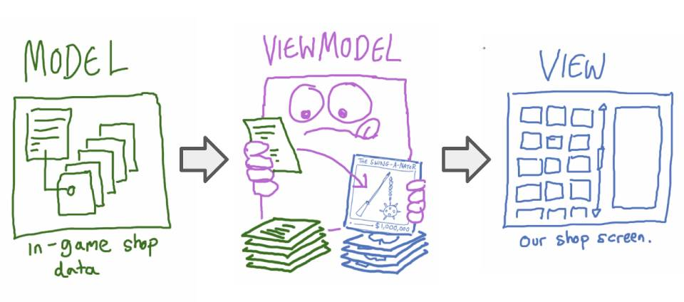
-
- The Model. This is the Game Data, it doesn’t know or care about the UI at all, but will dispatch events when important game data changes (i.e. health changed.)
-
- The ViewModel. This is a translator that watches the game data and converts it into UI friendly data. It dispatches events when the UI friendly data has been updated, but doesn’t know or care what Widgets or Screens are using this data.
-
- The View. This is the screen or widget. It doesn’t care about the Model/Game Data, but instead listens to changes on the ViewModel and uses the translated UI friendly data to populate itself.
So with that explained, lets look at how we can insert Mock Data into this pattern, and how we can avoid redoing our Mock Data work once the game data comes in.
Data Flow Handling #
So the ordinary data flow of the MVVM pattern is:
- Model (Game Data) → ViewModel (Converting to UI friendly data) → View (Displaying UI friendly data)
Using Mock Data we bypass the need for the Model/Game Data, so the next step is converting to UI friendly data. What if that UI friendly data was the exact same structure as our Mock Data? If so we can also skip the conversion process into UI friendly data.
This means with Mock Data we instead have a flow of:
- Mock Data (UI friendly data) → ViewModel (No need to convert!) → View
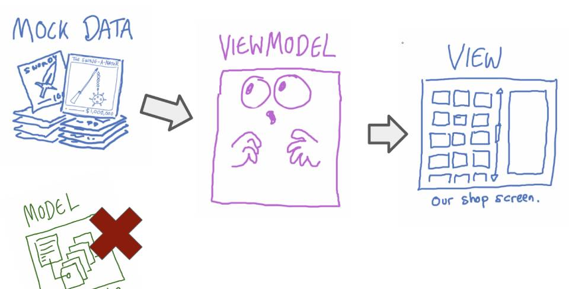
This gives us a second benefit: Every time we have to update the UI friendly data we’re simultaneously updating our Mock Data!
Player Input Handling #
Now we’ve covered the data flow, but with the MVVM pattern we also have to care about the input flow. When the player clicks a button, (i.e. “Purchase Weapon”) the following flow happens:
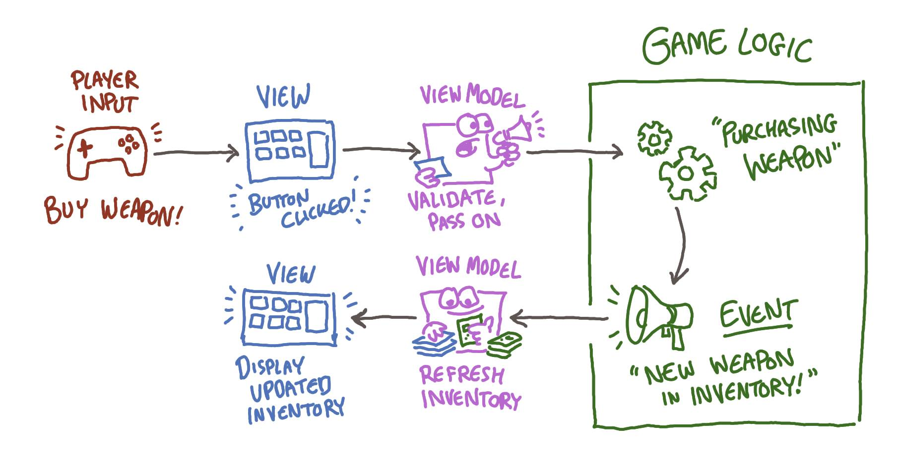
With Mock Data we’re explicitly avoiding any interaction with the game logic, so how do we work around this in the simplest way possible?
Solution: Add functions in the ViewModel that fake the game logic.
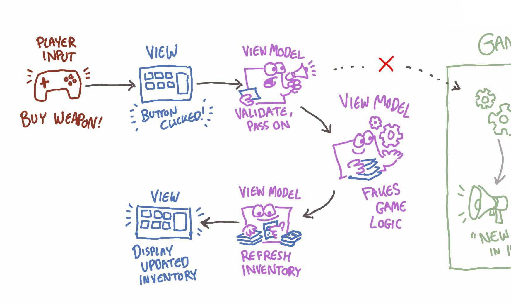
Your button is supposed to purchase that weapon? Write a MockPurchaseItem() function in the ViewModel that gets called if we’re using Mock Data. Instead of passing the logic along to the game, just subtract the cost from the mock money available and remove the mock weapon from the seller’s mock inventory. Trigger a Refresh for the View and you’re good to go.
Summary #
While the focus here has been on “Easy to Create”, you can see how good techniques you apply can have a knock-on-effect on all the other pillars. Here looking into using Museums, Console Commands, and Mock Data not only alleviate the creation pain points, but also make your UI easier to iterate, test, and debug!